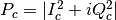
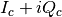

rss_ringoccs.calibration.power_normalization module¶
- Purpose:
- Normalize frequency-corrected power using a polynomial fit of specified order.
-
class
rss_ringoccs.calibration.power_normalization.Normalization(spm_raw, IQ_c, geo_inst, rsr_inst, order=3, fittype='poly', interact=False, verbose=False)¶ Bases:
object- Purpose:
- Finds freespace power based on ring geometry, locations of gaps computed by the Geometry class, and signal power relative to median power within the gaps. Fits the freespace power with a polynomial. If desired, this fitting process can be interactive. A plot will be saved following rss_ringoccs nomenclature to visualize the fit results.
- Arguments:
spm_raw (np.ndarray): SPM as sampled in the raw data IQ_c (np.ndarray): frequency-corrected signal corresponding to spm_raw geo_inst (np.ndarray): instance of the Geometry class, used to estimate the freespace regions within and surrounding the ring system, accounting for Saturn occultation and the Keplerian geometry of the rings rho_km_vals (np.ndarray): radial intercept poin of occultation in km - Keyword Arguments
verbose (bool): when True, outputs information to command line about the freespace power fitting progress and results. All results will be output to the CAL.LBL file regardless of this keyword. Default is False. order (float): a whole number specifying the order of the polynomial fit to the freespace power. Default is 3. interact (bool): If True, allows user to interactively adjust fit to the freespace power. Default is False.
-
create_mask(spm, gaps_spm, pc)¶ - Arguments:
spm (np.ndarray): SPM in seconds of the downsampled signal rho (np.ndarray): occultation intercept radius of the downsampled signal gaps_spm (list): location of freespace regions as predicted by the gap-finding routines get_freespace.pyusing tabulated orbital parameters.pc (np.ndarray): phase-corrected downsampled power where . Sets attributes mask (np.ndarray): array of booleans wherein True designates data corresponding to freespace power and False data corresponding to occultation events gaps (list): an Nx2 list of lower and upper radial limits in km for each of N gaps designated
-
downsample_IQ(spm_raw, IQ_c_raw, dt_down=0.5, verbose=False)¶ - Purpose:
- Downsample complex signal to specified time spacing to avoid diffraction pattern affecting freespace power fit
- Arguments:
spm_raw (np.ndarray): raw SPM values IQ_c_raw (np.nparray):  sampled at the raw SPM rate - Keyword Arguments:
dt_down (float): Time spacing to downsample to verbose (bool): If True, prints downsampled results - Returns:
spm_vals_down (np.ndarray): SPM values after downsampling rho_km_vals_down (np.ndarray): Rho values after downsampling p_obs_down (np.ndarray): Observed power after downsampling
-
extract_list_from_str(gaps_str)¶ - Purpose:
- Extract an Nx2 list from the string of user input freespace regions.
- Arguments:
gaps_str (str): string containing the user input freespace regions. - Returns:
gaps (list): an Nx2 list of floats indicating the lower and upper limits to the user-specific freespace regions.
-
fit_check(spm_down, p_obs_down, freespace_spm, order)¶ - Purpose:
- Allows user to update the freespace regions and fit order during the
freespace power fitting step. This is done by prompting the user for
input in the command line and displaying the results of their input
for the polynomial fit to the freespace power.
Only called if the Normalization keyword
interactis set to True. - Arguments:
gaps_str (str): string containing the user input freespace regions. - Returns:
gaps (list): an Nx2 list of floats indicating the lower and upper limits to the user-specific freespace regions.
-
fit_freespace_power(spm, power, order=3, fittype='poly')¶ - Arguments:
spm (np.ndarray): downsampled SPM power (np.ndarray): absolute square of downsampled phase-corrected signal - Keyword Arguments:
order (float): order of the fit, whole number between 1 and 5. Default order is 3.
type (str): type of fit to use, default is ‘poly’. Options are
- ‘poly’ a single polynomial
- ‘spline’ an unsmoothed spline fit
- Returns
fit (np.ndarray): best fit to freespace power
-
hfit_med(p_obs_down)¶
-
plot_power_profile(spm, pow, gaps, order, save=False)¶ - Purpose:
- Plot results of the freespace power for total profile and each individual freespace region and either show plot in a GUI or save it to a file. File name will match the *.LBL and *.TAB nomenclature.
- Arguments:
spm (np.ndarray): SPM sampled by calc_freq_offsetwhen calculating the offset frequencies for the occultationpow (np.ndarray): residual sky frequency gaps (np.ndarray): gap edges used to select freespace power order (float): order of polynomial fit to the residual sky frequency - Keyword Arguments:
save (bool): If True, saves plots to file. Otherwise, plot is shown in GUI. Default is False.